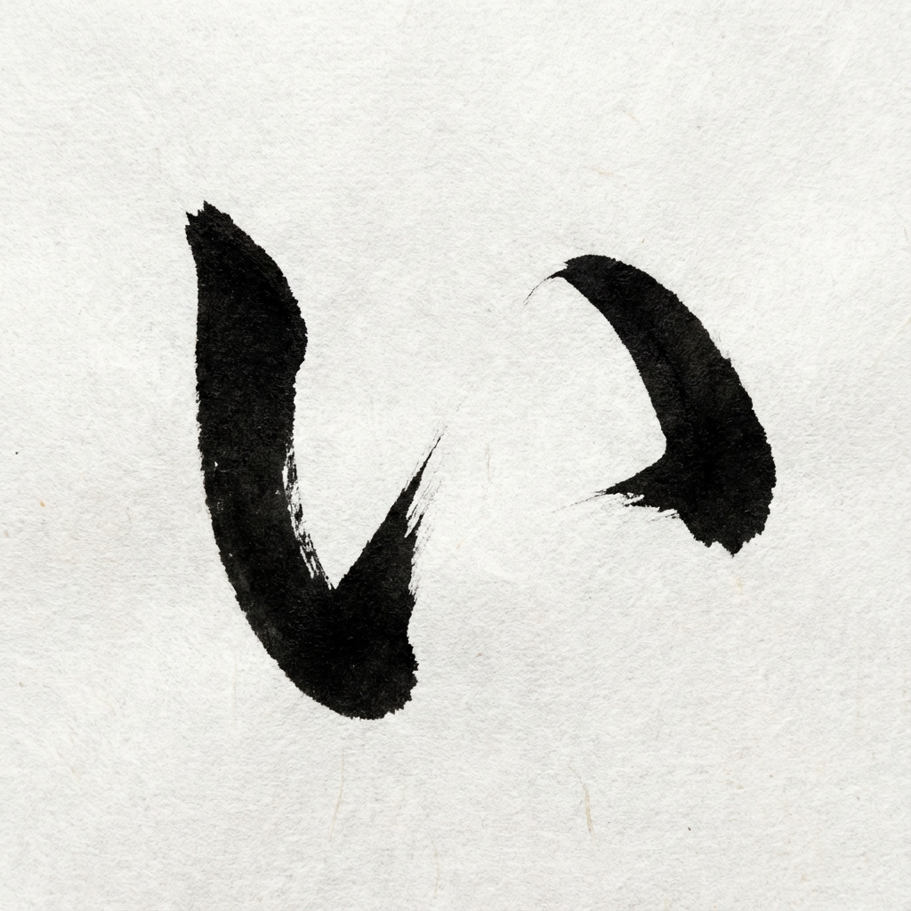

00 50音图的底层逻辑
- 真的是50个吗？ 并不是。结构是 5段 x 10行 = 50格。但其中有5个是空缺/重复的，加上一个特殊的“拨音 (n)”，实际发音只有 46个。
- 元音 (Vowels) 的地位： 第一行 (あ行) 是元音。就像拼音一样，后面所有的假名 (Fa, Ka, Sa...) 都是由 辅音 + 元音 拼出来的。学好元音，就等于学会了90%的发音！
Hi, Minna-san! 欢迎来到盾盾老师的日语课堂。
让我们通过联想记忆法，轻松掌握日语发音的基石。
Native & Grammar
草书演变而来，线条圆润。用于固有词和语法助词。
Foreign & Emphasis
楷书偏旁演变而来，方方正正。用于外来语(Coffee, Bus)和强调。
Japanese has **no tones** like Chinese! It uses **Pitch Accent** (high/low) instead.
点击卡片翻转查看记忆法，悬停图表查看书写顺序。
Writing Order

Hiragana あ comes from the cursive form of
安 (An).
Think of the majestic Tiananmen!
Writing Order

Hiragana い comes from 以 (Yi/I).
Two people standing side by side (Human radical definition).

Writing Order

Derived from the Kanji 宇 (Universe).
Think of the universe being infinite!
⚠️ Pronunciation Tip:
Don't pout your lips! Keep them flat.


"【诶】？！元旦也要【工】作？"

我是艺术天【才】(o)！
Start of Word
Middle / End
👋 The Hand Test
Place your hand in front of your mouth.
Word Start: Feel the wind.
Word Middle: No wind.
汇集本课所有核心知识点，建议配合视频背诵！📚
源自汉字：平「安」/ 片「阿」
"天【安】门好雄伟【啊】！"
源自汉字：平「以」/ 片「伊」(人字旁)
"我【以】为你【依】然一个人。"
源自汉字：平「宇」/ 片「宇」(的宝盖头)
"【宇】宙无限大！" (注意：嘴巴平，不要撅嘴)
源自汉字：平「衣」/ 片「工」
"【诶】？！元旦也要【工】作？"
源自汉字：平「於」/ 片「於」(的方旁/才)
"我是艺术天【才】(哦)！"
为了防止你只记住了“顺序”而没记住“字”，请务必进行以下练习：
あ い う え お
(建立初步语感)
お え う い あ
(打破序列记忆，拼单词必练)
随机指读。看到就能读，不看罗马音也能反应。
记住规律：一调降，二三四后降，零调不降反升。
| 调型 | 核心规律 | 经典例子 |
|---|---|---|
| 0调 (平板) | 第1音低，第2音开始高，助词也高 (没有下降)。 |
上 (Ue) 日本語 (Nihongo) 宇宙 (Uchuu) |
| 1调 (头高) | 第1音高，第2音立即下降。 |
愛 (Ai) 留学生 (Ryugakusei) - *注:有些教材标4 |
| 2调 (中高) | 第1音低，第2音后下降 (第3音变低)。 |
家 (Ie) 二年生 (Ninensei) 青い (Aoi) |
| 3调 (中高) | 第1音低，第3音后下降。 | 新入生 (Shinnyuusei) |
| 4调 (中高) | 第1音低，第4音后下降。 |
中国人 (Chuugokujin) 留学生 (Ryugakusei) |
仅限 Ka, Ta, Pa 行。
あなた (Anata)
听起来像: Anada (但不振动声带)
わたし (Watashi)
听起来像: Wadashi